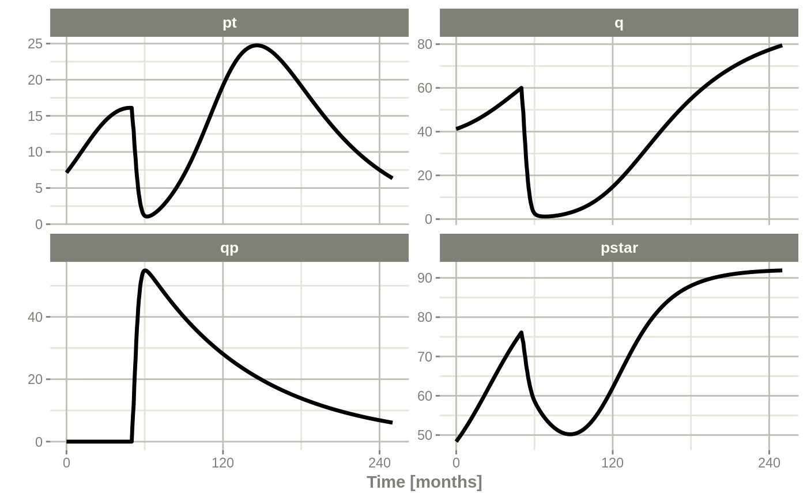
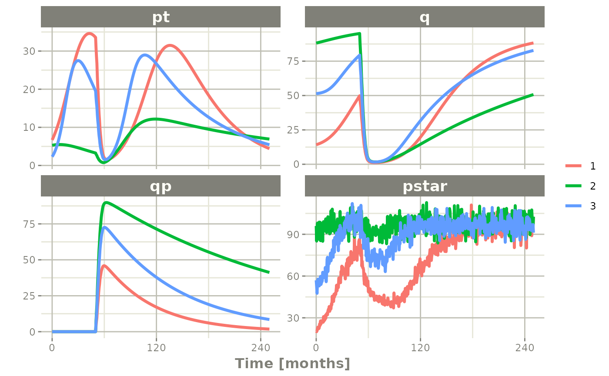
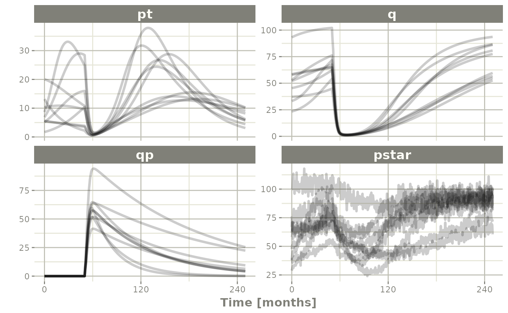
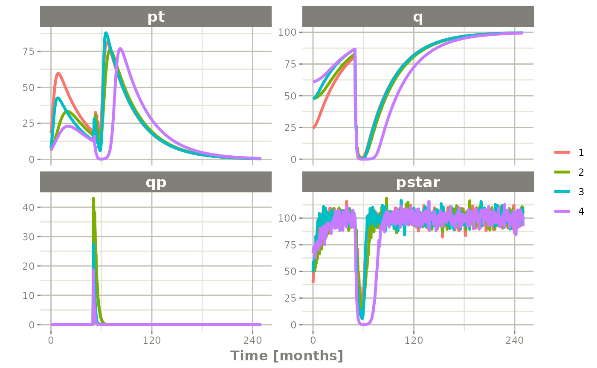
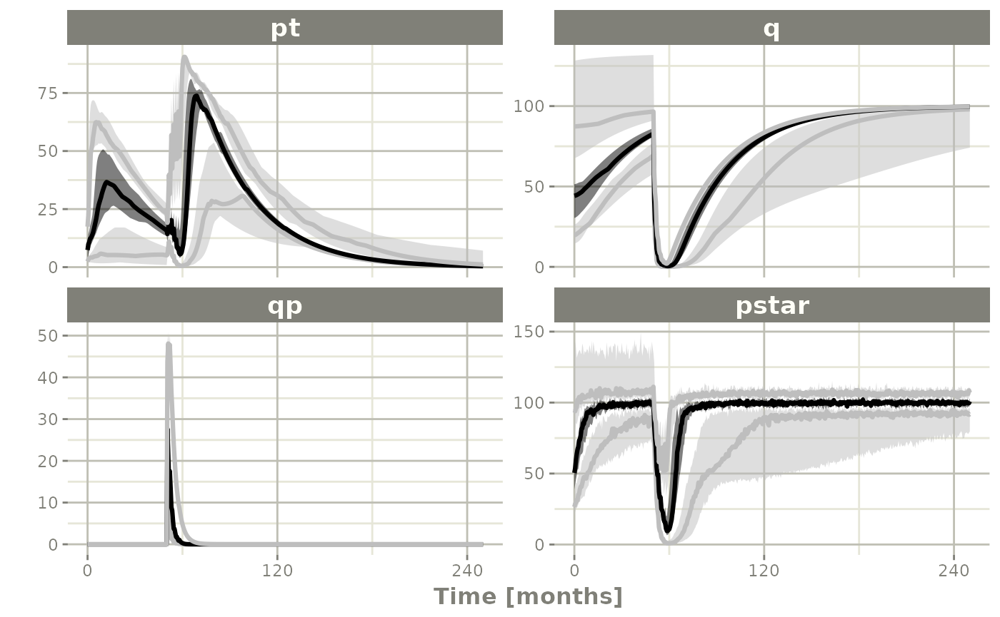
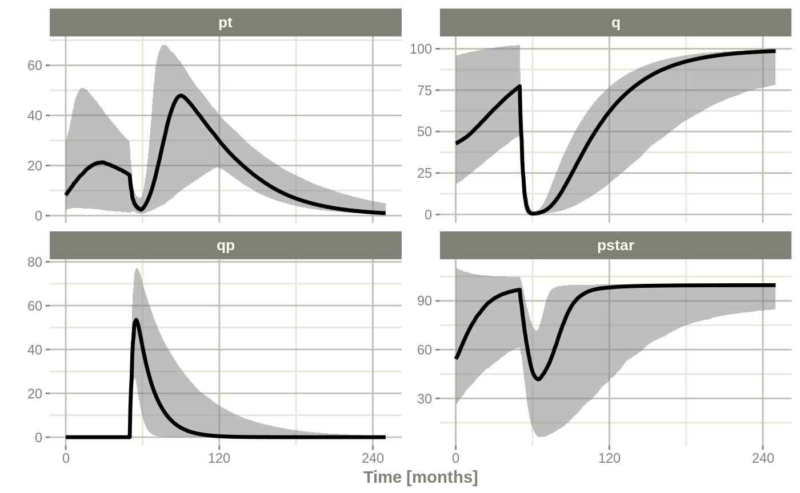

RxODE in a pipeline
2019-11-11
RxODE-pipeline.Rmdlibrary(RxODE)Setting up the RxODE model for the pipeline
In this example we will show how to use RxODE in a simple pipeline.
We can start with a model that can be used for the different simulation workflows that RxODE can handle:
Ribba2012 <- RxODE({
k = 100
tkde = 0.24
eta.tkde = 0
kde ~ tkde*exp(eta.tkde)
tkpq = 0.0295
eta.kpq = 0
kpq ~ tkpq * exp(eta.kpq)
tkqpp = 0.0031
eta.kqpp = 0
kqpp ~ tkqpp * exp(eta.kqpp)
tlambdap = 0.121
eta.lambdap = 0
lambdap ~ tlambdap*exp(eta.lambdap)
tgamma = 0.729
eta.gamma = 0
gamma ~ tgamma*exp(eta.gamma)
tdeltaqp = 0.00867
eta.deltaqp = 0
deltaqp ~ tdeltaqp*exp(eta.deltaqp)
prop.err <- 0
pstar <- (pt+q+qp)*(1+prop.err)
d/dt(c) = -kde * c
d/dt(pt) = lambdap * pt *(1-pstar/k) + kqpp*qp -
kpq*pt - gamma*c*kde*pt
d/dt(q) = kpq*pt -gamma*c*kde*q
d/dt(qp) = gamma*c*kde*q - kqpp*qp - deltaqp*qp
## initial conditions
tpt0 = 7.13
eta.pt0 = 0
pt0 ~ tpt0*exp(eta.pt0)
tq0 = 41.2
eta.q0 = 0
q0 ~ tq0*exp(eta.q0)
pt(0) = pt0
q(0) = q0
})This is a tumor growth model described in Ribba 2012. In this case, we compiled the model into an R object Ribba2012, though in an RxODE simulation pipeline, you do not have to assign the compiled model to any object, though I think it makes sense.
Simulating one event table
Simulating a single event table is quite simple:
- You pipe the RxODE simulation object into an event table object by
et().
- When the events are completely specified, you simply solve the ODE system with
rxSolve(). - In this case you can pipe the output to
plot()to conveniently view the results. - Note for the plot we are only selecting the selecting following:
-
pt(Proliferative Tissue), -
q(quiescent tissue) -
qp(DNA-Damaged quiescent tissue) and -
pstar(total tumor tissue)
Ribba2012 %>% # Use RxODE
et(time.units="months") %>% # Pipe to a new event table
et(amt=1, time=50, until=58, ii=1.5) %>% # Add dosing every 1.5 months
et(0, 250, by=0.5) %>% # Add some sampling times (not required)
rxSolve() %>% # Solve the simulation
plot(pt, q, qp, pstar) # Plot it, plotting the variables of interest
Simulating multiple subjects from a single event table
Simulating with between subject variability
The next sort of simulation that may be useful is simulating multiple patients with the same treatments. In this case, we will use the omega matrix specified by the paper:
## Add CVs from paper for individual simulation
## Uses exact formula:
lognCv = function(x){log((x/100)^2+1)}
library(lotri)
## Now create omega matrix
## I'm using lotri to quickly specify names/diagonals
omega <- lotri(eta.pt0 ~ lognCv(94),
eta.q0 ~ lognCv(54),
eta.lambdap ~ lognCv(72),
eta.kqp ~ lognCv(76),
eta.qpp ~ lognCv(97),
eta.deltaqp ~ lognCv(115),
eta.kde ~ lognCv(70))
omega
#> eta.pt0 eta.q0 eta.lambdap eta.kqp eta.qpp
#> eta.pt0 0.6331848 0.0000000 0.0000000 0.0000000 0.0000000
#> eta.q0 0.0000000 0.2558818 0.0000000 0.0000000 0.0000000
#> eta.lambdap 0.0000000 0.0000000 0.4176571 0.0000000 0.0000000
#> eta.kqp 0.0000000 0.0000000 0.0000000 0.4559047 0.0000000
#> eta.qpp 0.0000000 0.0000000 0.0000000 0.0000000 0.6631518
#> eta.deltaqp 0.0000000 0.0000000 0.0000000 0.0000000 0.0000000
#> eta.kde 0.0000000 0.0000000 0.0000000 0.0000000 0.0000000
#> eta.deltaqp eta.kde
#> eta.pt0 0.0000000 0.0000000
#> eta.q0 0.0000000 0.0000000
#> eta.lambdap 0.0000000 0.0000000
#> eta.kqp 0.0000000 0.0000000
#> eta.qpp 0.0000000 0.0000000
#> eta.deltaqp 0.8426442 0.0000000
#> eta.kde 0.0000000 0.3987761With this information, it is easy to simulate 3 subjects from the model-based parameters:
set.seed(1089)
Ribba2012 %>% # Use RxODE
et(time.units="months") %>% # Pipe to a new event table
et(amt=1, time=50, until=58, ii=1.5) %>% # Add dosing every 1.5 months
et(0, 250, by=0.5) %>% # Add some sampling times (not required)
rxSolve(nSub=3, omega=omega) %>% # Solve the simulation
plot(pt, q, qp, pstar) # Plot it, plotting the variables of interest
Note there are two different things that were added to this simulation: - nSub to specify how many subjects are in the model - omega to specify the between subject variability.
Simulation with unexplained variability
You can even add unexplained variability quite easily:
Ribba2012 %>% # Use RxODE
et(time.units="months") %>% # Pipe to a new event table
et(amt=1, time=50, until=58, ii=1.5) %>% # Add dosing every 1.5 months
et(0, 250, by=0.5) %>% # Add some sampling times (not required)
rxSolve(nSub=3, omega=omega, sigma=lotri(prop.err ~ 0.05^2)) %>% # Solve the simulation
plot(pt, q, qp, pstar) # Plot it, plotting the variables of interest
In this case we only added the sigma matrix to have unexplained variability on the pstar or total tumor tissue.
You can even simulate with uncertainty in the theta omega and sigma values if you wish.
Simulation with uncertainty in all the parameters (by matrices)
If we assume these parameters came from 95 subjects with 8 observations apiece, the degrees of freedom for the omega matrix would be 95, and the degrees of freedom of the sigma matrix would be 95*8=760 because 95 items informed the omega matrix, and 760 items informed the sigma matrix.
Ribba2012 %>% # Use RxODE
et(time.units="months") %>% # Pipe to a new event table
et(amt=1, time=50, until=58, ii=1.5) %>% # Add dosing every 1.5 months
et(0, 250, by=0.5) %>% # Add some sampling times (not required)
rxSolve(nSub=3, nStud=3, omega=omega, sigma=lotri(prop.err ~ 0.05^2),
dfSub=760, dfObs=95) %>% # Solve the simulation
plot(pt, q, qp, pstar) # Plot it, plotting the variables of interest
Often in simulations we have a full covariance matrix for the fixed effect parameters. In this case, we do not have the matrix, but it could be specified by thetaMat.
While we do not have a full covariance matrix, we can have information about the diagonal elements of the covariance matrix from the model paper. These can be converted as follows:
rseVar <- function(est, rse){
return(est*rse/100)^2
}
thetaMat <- lotri(tpt0 ~ rseVar(7.13,25),
tq0 ~ rseVar(41.2,7),
tlambdap ~ rseVar(0.121, 16),
tkqpp ~ rseVar(0.0031, 35),
tdeltaqp ~ rseVar(0.00867, 21),
tgamma ~ rseVar(0.729, 37),
tkde ~ rseVar(0.24, 33)
);
thetaMat
#> tpt0 tq0 tlambdap tkqpp tdeltaqp tgamma tkde
#> tpt0 1.7825 0.000 0.00000 0.000000 0.0000000 0.00000 0.0000
#> tq0 0.0000 2.884 0.00000 0.000000 0.0000000 0.00000 0.0000
#> tlambdap 0.0000 0.000 0.01936 0.000000 0.0000000 0.00000 0.0000
#> tkqpp 0.0000 0.000 0.00000 0.001085 0.0000000 0.00000 0.0000
#> tdeltaqp 0.0000 0.000 0.00000 0.000000 0.0018207 0.00000 0.0000
#> tgamma 0.0000 0.000 0.00000 0.000000 0.0000000 0.26973 0.0000
#> tkde 0.0000 0.000 0.00000 0.000000 0.0000000 0.00000 0.0792Now we have a thetaMat to represent the uncertainty in the theta matrix, as well as the other pieces in the simulation. Typically you can put this information into your simulation with the thetaMat matrix.
With such large variability in theta it is easy to sample a negative rate constant, which does not make sense. For example:
Ribba2012 %>% # Use RxODE
et(time.units="months") %>% # Pipe to a new event table
et(amt=1, time=50, until=58, ii=1.5) %>% # Add dosing every 1.5 months
et(0, 250, by=0.5) %>% # Add some sampling times (not required)
rxSolve(nSub=2, nStud=2, omega=omega, sigma=lotri(prop.err ~ 0.05^2),
thetaMat=thetaMat,
dfSub=760, dfObs=95) %>% # Solve the simulation
plot(pt, q, qp, pstar) # Plot it, plotting the variables of interest
#> unhandled error message: EE:[lsoda] 70000 steps taken before reaching tout
#> @(lsoda.c:750
#> Warning message:
#> In rxSolve_(object, .ctl, .nms, .xtra, params, events, inits, setupOnly = .setupOnly) :
#> Some ID(s) could not solve the ODEs correctly; These values are replaced with NA.To correct these problems you simply need to use a truncated multivariate normal and specify the reasonable ranges for the parameters. For theta this is specified by thetaLower and thetaUpper. Similar parameters are there for the other matrices: omegaLower, omegaUpper, sigmaLower and sigmaUpper. These may be named vectors, one numeric value, or a numeric vector matching the number of parameters specified in the thetaMat matrix.
In this case the simulation simply has to be modified to have thetaLower=0 to make sure all rates are positive:
Ribba2012 %>% # Use RxODE
et(time.units="months") %>% # Pipe to a new event table
et(amt=1, time=50, until=58, ii=1.5) %>% # Add dosing every 1.5 months
et(0, 250, by=0.5) %>% # Add some sampling times (not required)
rxSolve(nSub=2, nStud=2, omega=omega, sigma=lotri(prop.err ~ 0.05^2),
thetaMat=thetaMat,
thetaLower=0, # Make sure the rates are reasonable
dfSub=760, dfObs=95) %>% # Solve the simulation
plot(pt, q, qp, pstar) # Plot it, plotting the variables of interest
Summarizing the simulation output
While it is easy to use dplyr and data.table to perform your own summary of simulations, RxODE also provides this ability by the confint function.
## This takes a little more time; Most of the time is the summary
## time.
sim0 <- Ribba2012 %>% # Use RxODE
et(time.units="months") %>% # Pipe to a new event table
et(amt=1, time=50, until=58, ii=1.5) %>% # Add dosing every 1.5 months
et(0, 250, by=0.5) %>% # Add some sampling times (not required)
rxSolve(nSub=10, nStud=10, omega=omega, sigma=lotri(prop.err ~ 0.05^2),
thetaMat=thetaMat,
thetaLower=0, # Make sure the rates are reasonable
dfSub=760, dfObs=95) %>% # Solve the simulation
confint(c("pt","q","qp","pstar"),level=0.90); # Create Simulation intervals
#> Summarizing data
#> done.
sim0 %>% plot() # Plot the simulation intervals
Simulating from a data-frame of parameters
While the simulation from matrices can be very useful and a fast way to simulate information, sometimes you may want to simulate more complex scenarios. For instance, there may be some reason to believe that tkde needs to be above tlambdap, therefore these need to be simulated more carefully. You can generate the data frame in whatever way you want. The internal method of simulating the new parameters is exported too.
library(dplyr)
#>
#> Attaching package: 'dplyr'
#> The following objects are masked from 'package:stats':
#>
#> filter, lag
#> The following objects are masked from 'package:base':
#>
#> intersect, setdiff, setequal, union
pars <- rxInits(Ribba2012);
pars <- pars[regexpr("(prop|eta)",names(pars)) == -1]
print(pars)
#> k tkde tkpq tkqpp tlambdap tgamma tdeltaqp tpt0
#> 1.00e+02 2.40e-01 2.95e-02 3.10e-03 1.21e-01 7.29e-01 8.67e-03 7.13e+00
#> tq0
#> 4.12e+01
## This is the exported method for simulation of Theta/Omega internally in RxODE
df <- rxSimThetaOmega(params=pars, omega=omega,dfSub=760,
thetaMat=thetaMat, thetaLower=0, nSub=60,nStud=60) %>%
filter(tkde > tlambdap) %>% as.tbl()
## You could also simulate more and bind them together to a data frame.
print(df)
#> # A tibble: 3,120 x 16
#> k tkde tkpq tkqpp tlambdap tgamma tdeltaqp tpt0 tq0 eta.pt0
#> <dbl> <dbl> <dbl> <dbl> <dbl> <dbl> <dbl> <dbl> <dbl> <dbl>
#> 1 100 0.392 0.0295 0.0813 0.136 1.30 0.0225 7.16 42.4 0.845
#> 2 100 0.392 0.0295 0.0813 0.136 1.30 0.0225 7.16 42.4 0.137
#> 3 100 0.392 0.0295 0.0813 0.136 1.30 0.0225 7.16 42.4 0.944
#> 4 100 0.392 0.0295 0.0813 0.136 1.30 0.0225 7.16 42.4 -0.977
#> 5 100 0.392 0.0295 0.0813 0.136 1.30 0.0225 7.16 42.4 -0.715
#> 6 100 0.392 0.0295 0.0813 0.136 1.30 0.0225 7.16 42.4 -1.14
#> 7 100 0.392 0.0295 0.0813 0.136 1.30 0.0225 7.16 42.4 -1.92
#> 8 100 0.392 0.0295 0.0813 0.136 1.30 0.0225 7.16 42.4 -0.441
#> 9 100 0.392 0.0295 0.0813 0.136 1.30 0.0225 7.16 42.4 0.715
#> 10 100 0.392 0.0295 0.0813 0.136 1.30 0.0225 7.16 42.4 -0.981
#> # … with 3,110 more rows, and 6 more variables: eta.q0 <dbl>,
#> # eta.lambdap <dbl>, eta.kqp <dbl>, eta.qpp <dbl>, eta.deltaqp <dbl>,
#> # eta.kde <dbl>
## Quick check to make sure that all the parameters are OK.
all(df$tkde>df$tlambdap)
#> [1] TRUE
sim1 <- Ribba2012 %>% # Use RxODE
et(time.units="months") %>% # Pipe to a new event table
et(amt=1, time=50, until=58, ii=1.5) %>% # Add dosing every 1.5 months
et(0, 250, by=0.5) %>% # Add some sampling times (not required)
rxSolve(df)
## Note this information looses information about which ID is in a
## "study", so it summarizes the confidence intervals by dividing the
## subjects into sqrt(#subjects) subjects and then summarizes the
## confidence intervals
sim2 <- sim1 %>% confint(c("pt","q","qp","pstar"),level=0.90); # Create Simulation intervals
#> Warning in confint.rxSolve(., c("pt", "q", "qp", "pstar"), level = 0.9): In
#> order to put confidence bands around the intervals, you need at least 2500
#> simulations.
#> Summarizing data
#> done.
save(sim2, file = file.path(system.file(package = "RxODE"), "pipeline-sim2.rds"), version = 2)
sim2 %>% plot()